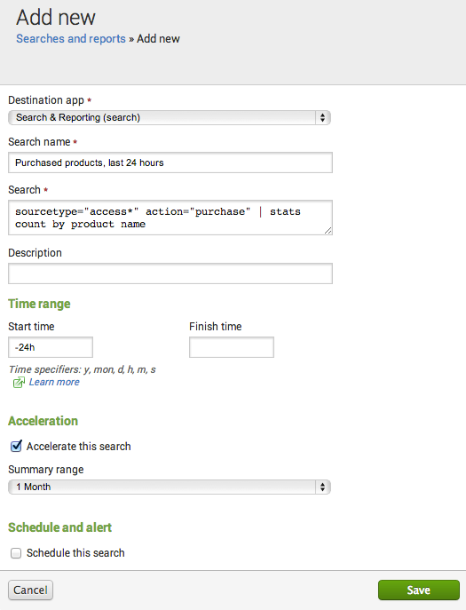
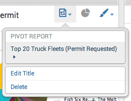

In Splunk, reports are created whenever you save a search or a pivot for later reuse. Once a report is created, there's a lot you can do with it.
Because reports can be created from either side of the Splunk Enterprise fence, we've created a manual to isolate all of the functionality related to reports and reporting in one place. In this manual, you'll find out how to:
savedsearches.conf. Convert a dashboard panel to a report. Share your report with others by changing its permissions.
When you create a search or a pivot that you would like to run again or share with others, you can save it as a report. This means that you can create reports from both the Search and the Pivot sides of Splunk Enterprise.
Once you create a report you can:
This topic explains how you can create and edit reports.
In addition, if your permissions enable you to do so, you can:
For more information about scheduling reports, see "Schedule reports," in this manual.
For more information about accelerating reports, see "Accelerate reports," in this manual.
For more information about adding reports to dashboards as dashboard panels see "Add a search, report, or pivot to a dashboard" in the Splunk Data Visualizations Manual.
For more information about managing report permissions see "Manage knowledge object permissions," in the Knowledge Manager Manual.
Note: Permissions for reports built via Pivot must match those of the data model that was used to construct them. See "Save a search or report as a pivot," below, for more information.
You can create reports via Splunk Web four ways:
See the following subsections for more information about these report creation methods.
At minimum, a report definition includes the search string and the time range associated with the search (expressed in terms of relative time modifiers). You also have to give the report a name so you can identify it in the Reports listing page and the Searches and reports page in Settings.
When you design a search or pivot that returns useful results, you can save it as a report. After you run a search or create a pivot, just click Save As and select Report to open the Save As Report dialog. The report will retain any formatting that you set up for the original search, including chart visualizations and event list display options.
Note: You can only save a search as a report when it is running, paused, finalized, or completed.
Here you can provide a unique title for the report and an optional description. You can also determine whether the report will include a time range picker. Inclusion of a time range picker enables users who do not have write permissions for the report to rerun it over a different time range without actually editing the report.
If you do not provide a time range picker, the report will always run over the same time range, and the only way to change this will be for someone with edit permissions for the report to open the report in Search, change the time range, and save that edit.
Clicking Save opens the Your Report Has Been Created dialog. From here you can:
You can also just close the dialog box if you'd rather do none of these things and continue searching. Just click the "x" in the upper right-hand corner.
Note: Permissions for reports built via Pivot must match those of the data model that was used to construct them. For example, say your Splunk Enterprise instance has two apps: Search and Security. While in the context of the Security app, you use that app's External Threats data model to create a pivot-based report titled "Top Firewall Attacks by IP." The External Threats data model has permissions that are scoped to the Security app, nothing more.
When you first create the report, its permissions only allow you to see and update it. You want everyone who uses this Splunk Enterprise implementation to see the "Top Firewall Attacks by IP" report (regardless of app context), so you change its permissions to Global. Now, when you switch your app context to the Search app, you might expect to be able to access "Top Firewall Attacks by IP" from the Search app.
But you won't be able to view it. This is because the report can't be built without the External Threats data model, and that data model's permissions are still scoped to the Security app. You need to share External Threats globally in order to access and run the "Top Firewall Threats by IP" report from the Search app.
When you want to create a report, in general the easiest thing to do is run the search or pivot and then save it as a report, as described above. This method enables you to test the search before you save it.
However, you can also manually create new reports in the Settings section of Splunk Web. To do this, navigate to Settings > Searches and reports and click New to define and add a new report. When you define a report in Settings, you'll set it up as a "saved search." But this search will appear as a report on the Reports listing page when you're done (or on the Alerts listing page, if you configure it as an alert).
At minimum you must provide a Destination app for the search (Splunk Enterprise will use your current app context by default), the Search name, and the actual search string (in the Search field). You should also provide a Start time and End time for the search, unless you want the search to run over all time, in which case it's fine to leave those fields blank. Use relative time modifiers to express the start and end times.
You can optionally enter a search description that explains what the search does and/or how it should be used.

The Acceleration controls can enable a search that is normally slow-completing to complete much faster on future runs. To set up report acceleration for a search you select Accelerate this search and then choose an appropriate Summary range. You can only select Accelerate this search if your permissions enable you to do so.
In addition, only specific kinds of searches qualify for report acceleration. If your search string does not qualify for report acceleration you will receive an error telling you that the search cannot be accelerated when you try to save it. For more information about report acceleration, see "Accelerate reports", in this manual. For detailed examples of the kinds of searches that qualify for report acceleration, see "Manage report acceleration" in the Knowledge Manager Manual.
You can optionally select Schedule this search if your permissions enable you to do so. This opens up a variety of fields that enable you to set up the search as a scheduled report, define triggering conditions for an alert based on the search, and set up alerting actions (what happens when the alert is triggered). In other words, you can use it to turn your search into an alert or a scheduled report.
For more information about creating alerts see "About alerts," in the Alerting Manual. This topic also has information about alerting options that are only available through the Searches and reports detail page in Manager, such as the capability to set expiration times for alert records in the Alert Manager or the "add to RSS feed" alerting condition.
For more information about defining scheduled reports (reports that run on a schedule and which send search results via email or launch a script each time they run), see "Schedule reports" in this manual.
The Searches and reports detail page in Manager is also the only place in the Splunk Web UI where you can enable summary indexing for a saved search (you can also configure summary indexing for a search by modifying savedsearches.conf). For more information about summary indexing, see the topic "Enable summary indexing for a search," in the Knowledge Manager Manual.
You can edit and update searches listed on the Searches and reports page if you have "write" permissions for them. For more information about permissions, see "Manage knowledge object permissions" in the Knowledge Manager Manual.
When you save a report via Splunk Web or Settings, Splunk Enterprise automatically adds a configuration stanza for that report to savedsearches.conf. The UI validates your changes, and you don't have to reboot the system to apply reports created via UI methods. But if you prefer to work with reports directly through configuration files, you certainly can.
For more information about configuring reports and alerts in savedsearches.conf, see the spec file for savedsearches.conf and the "Configure alerts in savedsearches.conf" topic in the Alerting Manual.
You may want to convert dashboard panels that are "powered by" inline searches to reports, so that they can have some of the advantages that report-based panels have over inline-search-powered panels, such as faster loading times due to report acceleration.
When you save a new search or a pivot as a dashboard panel, Splunk Enterprise creates a dashboard panel that is "powered by" an inline search. This means that the search that drives the dashboard is "in" the dashboard; it is not connected to a report or other external object. The benefit of this is that you can edit the search that powers the dashboard or change its visualization type without leaving the dashboard.
On the other hand, when you open an existing report in Search or Pivot (see "Edit a report," below) and then save that search or pivot as a dashboard panel, you'll have a choice of basing the panel either on an inline search or on the report that you're editing. If you choose to base the panel on the report, the panel can take on the formatting of the report as well as its acceleration, scheduling, and permissions settings.
Note: Dashboard panels based on reports can have different formatting than the reports they're associated with. See the subsection "To have a dashboard panel take on the formatting of its affiliated report," below, for more information.
When you edit a dashboard panel that is powered by an inline search, you have the option of converting it to a report. Doing so creates a new report based on the dashboard. You can view and edit this report via the Reports listing page (or the Searches and Reports page in Settings). The dashboard panel will remain, but you will no longer be able to edit the search that powers it from within the dashboard. On the other hand, you'll now be able to define acceleration, scheduling, and permissions settings for the report that now powers the panel.
Note: If the dashboard panel derives from a pivot, you'll also lose the ability to change the panel visualization type via the dashboard when you convert it to a report.
1. Click Edit for the dashboard in question. Icons will appear at the upper right corner of each panel in the dashboard.
2. Click the Panel Properties icon for a panel based on a search or pivot and select Convert to Report. The Panel Properties icon is the leftmost of the three panel editing icons mentioned in the previous step. Its icon indicates the panel's document type--a magnifying glass for a panel based on a search, pivoting arrows for a pivot, or a sheet of paper for a search- or pivot-based report.
3. The Save panel as report dialog appears. Here you have an opportunity to provide a different Title and Description for the report than the title and description associated with the panel.
4. Click Save when you're done. Splunk Enterprise will add the report to the Reports listing page.
If you convert a dashboard panel to a report and then edit the report so it uses a different visualization or has different visualization formatting, your changes will not automatically be reflected in the affiliated panel. To sync up the dashboard panel with the updated report, follow these steps:
1. Click Edit for the dashboard that contains the panel you'd like to update.
2. Click the Panel Properties icon for the panel you'd like to update. In the dropdown list that appears, select the panel/report name (the name only appears for panels that have already been converted to a report). Doing this reveals a report info screen, where you can edit various aspects of the report (permissions, acceleration, scheduling, and so on) if your permissions enable you to do so.

3. Click Use Report Formatting on Visualization and then confirm that you want the panel to use the report's formatting. This causes the panel to use the visualization type and formatting that you have defined for the report. For example, if the panel displays a pie chart, but the report associated with the panel was edited to display its data as a column chart, clicking Use Report Formatting on Visualization will cause the panel to display the data in the same manner as the report: a column chart.
Note: In a similar manner, you can cause the panel to use the data and formatting of an entirely different report. Follow the steps above but click Select New Report instead of Use Report Formatting on Visualization. This opens the Select a New Report dialog. Choose a different report, click save, and the panel will update to display data visualized according to the selected report.
Keep in mind that your permissions determine what reports you can choose and edit.
By default, any report you save is initially private and only available to you. If your permissions allow it, you can change the permissions that belong to the report when you first save it by clicking Permissions on the Your Report Has Been Created dialog. This takes you to the Edit Permissions dialog.
Here, depending on your permissions, you have the ability to determine whether a report can be viewed by the users of just one app, or all users in all apps. You furthermore can set read and write permissions by role.
For example, you could make a report "globally" available to everyone that uses your Splunk Enterprise implementation. Or you could narrow the saved search permissions so that only specific roles within the current app can use it. You can also arrange for particular roles or users to have "write" access to the report, enabling them to change its underlying search or pivot, or to update its result display formatting.
You can also define or update permissions for a report by:
Note: If you are sharing a pivot-based report, the data model referenced by that report must be shared as well. You will receive an error message if you try to share a pivot-based report that references a private data model. For more information about sharing data models, see "Manage data models" in the Knowledge Manager Manual.
You can easily edit an existing report. You can edit a report's definition (its search string, pivot setup, or result formatting). You can also edit its description, permissions, schedule, and acceleration settings.
If you want to edit a report's definition, there are two ways to start, depending on whether you're on the Reports listing page or looking at the report itself.
Edit the definition of a report opened in Search
After you open a report in search, you can change the search string, time range, or report formatting. After you rerun the report, a Save button will be enabled towards the upper right of the report. Click this to save the report. You also have the option of saving your edited search as a new report.
Edit the definition of a report opened in Pivot
After you open a report in Pivot, change the definition of the pivot as you would like. You can add, remove, or redefine filters, split rows, split columns, or column values. You can also change the way the pivot results are formatted (change the visualization type, or fix the way a chart displays). When you are done, click Save at the upper right of the page to save your report. You also have the option of saving your edited pivot as a new report.
You can do this from the Reports listing page, or from the report viewing page. Click Edit and choose:
Note: You can't perform these actions if you've opened the report in Search or Pivot. Save the report or return to the Reports listing page if you want to edit these aspects of the report.
Report cloning is a way to quickly create a report that is based on an existing report. You can then edit it so it returns different results. To clone a report either go to the Reports listing page or the report itself, click Edit and select Clone.
Note: You can't perform this action if you've opened the report in Search or Pivot. Save the report or return to the Reports listing page if you want to edit these aspects of the report.
You can delete a report from the Reports listing page or the report viewing page. Just click Edit and select Delete. Most roles can only delete reports that they have created. For more information about granting roles the ability to delete reports that they do not own, see "Disable or delete knowledge objects," in the Knowledge Manager Manual.
Note: You can't perform this action if you've opened the report in Search or Pivot. Save the report or return to the Reports listing page if you want to edit these aspects of the report.
Have questions? Visit Splunk Answers and see what questions and answers the Splunk community has around reports.
If your report has a large number of events and is slow to complete when you run it, you may be able to accelerate it so it completes faster when you run it in the future.
Note: You can't accelerate a report if:
schedule_search and accelerate_search capabilities.
How does Splunk Enterprise accelerate the report? When you accelerate a report, Splunk Enterprise runs a background process that builds a data summary based on the results returned by the report. When you next run the search, Splunk Enterprise runs it against this summary rather than the full index. Because this summary is smaller than the full index and contains precomputed summary data relevant to the search, the search should complete much quicker than it did when you first ran it.
If your permissions enable you to accelerate a specific report and the report also qualifies for acceleration, you can accelerate it when you create it, or at any point after it has been created.
Note: If you try to accelerate a report that does not qualify for acceleration, you will receive an error message informing you that the report cannot be accelerated.
On the Edit Acceleration dialog, select Accelerate Report to expose Summary Range.
When you accelerate a report, you must choose a Summary Range value such as 7 Days, 3 Months, or All Time. This range represents the approximate span of time that is always covered by the summary at any given moment, once it is built. When the summary is built and you run this report again, to get full acceleration benefits the report must have a time range that fits within this summary range. For more information, see the subtopic "How Summary Range works," below.
Note: The data summaries discussed here operate on principles similar to those of traditional summary indexes, but that's where their resemblance ends. The data summaries that are created for report acceleration purposes are not summary indexes. For more information about report acceleration and summary indexing, and information about why one might prefer one method over the other, see "About report acceleration and summary indexing" in the Knowledge Manager Manual.
Summary Range sets the approximate range of time that a report's data summary will cover. When you run the report in the future only the portion of it that falls within that range will benefit from acceleration.
For example, if you choose a Summary Range of 7 Days, you're saying that going forward you want Splunk Enterprise to build and maintain a summary that always covers at least the last seven days. As time passes, Splunk Enterprise will delete data from this summary that is older than seven days while it continues to summarize incoming new data.
Once this summary is built, the report associated with it will complete relatively quickly as long as you run it over time ranges that fall within the past seven days. If you run the report over the past 10 days, it'll get acceleration benefits for the portion of the search that covers the last seven days, but the portion of the search that covers the remaining 3 days will have to run over raw data and will not be accelerated.
The same goes for the other Summary Range settings. Choose 1 Month if you plan to run the report over time ranges that are fall within the last 30 days. Choose 1 Year if you anticipate that you'll need to run the search over time ranges that fall within the past year. Keep in mind that larger summaries take longer for Splunk Enterprise to generate at first and will consume more storage resources.
Note: If you don't want there to be any restrictions over when you can run a search and still get acceleration benefits, choose All Time.
Report acceleration only works for reports that have Search Mode set to Smart or Fast. If you select the Verbose search mode for a report that has been accelerated, it will run as slow as it would if it were not accelerated at all. For more information about the Search Mode settings, see "Set search mode to adjust your search experience" in the Search Manual.
To qualify for acceleration, a report must have an underlying search that uses a transforming command (such as chart, timechart, stats, and top). In addition, any search commands before the first transforming command in the search string need to be streaming commands. (Nonstreaming commands are allowed after the first transforming command.)
We provide examples of qualifying and non-qualifying searches in "Manage report acceleration," in the Knowledge Manager Manual.
Splunk Enterprise provides a Manager page for this feature at Manager > Report Acceleration Summaries. On this page you can review the report summaries to which you have access. You can see the reports that apply to them, view their build progress, verify their consistency, rebuild them when they are damaged, delete summaries that are obsolete or which are taking up needed space, and more.
Note: You can only access the Report Acceleration Summaries page in Manager if your role enables you to accelerate reports (your role must have the schedule_search capability).
It's important to note that as the number of summaries in use by your implementation stacks up, you may encounter storage and performance impacts. This is because search acceleration summaries require storage space, and to keep them updated Splunk Enterprise has to run backgrounded searches on new data every 10 minutes. The Report Acceleration Summaries page enables you to quickly identify summaries that are taking up more space than they are worth, given the frequency of their use.
For more information about report acceleration, including an explanation of what is happening behind the scenes, a discussion of summary storage and performance considerations, and more tips on summary management with the Report Acceleration Summaries page, see "Manage report acceleration," in the Knowledge Manager Manual.
A scheduled report is a report that runs on a scheduled interval, and which can be configured to trigger an alert action each time it is run. There are two actions available for scheduled reports: Send email and Run a script.
Use Send email to email the results of the report to a set of designated recipients on a schedule that you determine. For example, send results every day at noon or each Monday at midnight.
Use Run a script to run scripts that post the results of the report to a external system for further processing or archiving on a regular schedule.
You can use these scheduled report actions to export search results from Splunk Enterprise. For a summary of other search result export methods, see "Export search results" in the Search Manual.
You can only create scheduled reports if your role includes the schedule_search capability. For more information about roles and capabilities, see "About defining roles with capabilities," in the Securing Splunk Enterprise Manual.
You cannot schedule reports that run in real-time when you create or edit reports in Search. Only reports that run over a historical time range can be scheduled.
savedsearches.conf. But the result is the same as if you scheduled them in Settings > Searches, reports, and alerts. Avoid scheduling real-time reports to prevent performance problems.
Reports can be scheduled during their creation process, or at any time after they have been created.
You can schedule a new report when you first save a search or pivot as a report. For more information about saving searches or pivots as reports, see "Create and edit reports", in this manual.
You can schedule an existing report when you:
If you schedule a report when you create it or edit its schedule settings via the Reports listing page, you'll be brought to the Edit Schedule dialog. See the section "Design a report schedule with the Edit Schedule dialog," below, for information about using this dialog to schedule a new or existing report.
If you schedule an existing report via the Searches and reports page in Settings, see the section Schedule reports in Settings," below.
Splunk Enterprise provides two actions for scheduled reports. Each time the report runs, Splunk Enterprise can do the following:
$SPLUNK_HOME/bin/scripts
Note: You can use these scheduled report actions to export search results from Splunk Enterprise. For a summary of other search result export methods, see "Export search results" in the Search Manual.
You configure actions for scheduled reports from the Reports Page or from a specific report. The following procedure shows how to schedule delivery of a report and run a script on the same schedule. This procedure is from the context of a specific report. However, the procedure is the same from the context of the Reports Page.
1. Select Edit > Edit schedule.
2. Click Schedule Report. The Schedule dialog opens. 3. Select a schedule.
4.The time range defaults to the time range for the report.
5. Click Next.
6. Select Send Email.
7. Specify the following email options.
8. Select Run a Script.
9. Click Save.
See "Use tokens in scheduled delivery of reports" in this topic to learn how to customize your scheduled report emails.
See Run a script in this topic for details on configuring scripts.
A token is a type of variable that represents data generated by a search job. Splunk Enterprise provides various tokens that you can use to include information generated by a search in the fields of an email. For scheduled report delivery, you can use tokens in the following fields of an email:
Access the value of a token with the following syntax:
For example, place the following token in the subject field of a scheduled report delivery to reference the app containing the report.
This section lists common tokens you can use in scheduled email delivery of reports. There are four categories of tokens that access data generated from a search. The context for using the tokens differ.
The following table lists all categories of tokens. Tokens from all categories are available for scheduling report delivery.
| Category | Description | Context |
|---|---|---|
| Search metadata | Information about the search. | Scheduled PDF delivery of dashboards Alert actions from search Scheduled reports |
| Server information | Information about the Splunk Enterprise server | Scheduled PDF delivery of dashboards Alert actions from search Scheduled reports |
| Search results | Access results of a search | Alert actions from search Scheduled reports |
| Job information | Data specific to a search job | Alert actions from search Scheduled reports |
In addition to the common tokens listed in this topic, the savedsearches.conf and alert_actions.conf files list attributes whose values are available from tokens. To access these additional attribute values, place the attribute between the $ token delimiters.
Common tokens that access information about a search. These tokens are available from the following contexts:
Here are some of the common tokens available.
| Token | Description |
|---|---|
| $action.email.hostname$ | Hostname of the email server. |
| $action.email.priority$ | Priority of the search. |
| $app$ | Name of the app containing the search. |
| $cron_schedule$ | Cron schedule for the app. |
| $description$ | Description of the search. |
| $name$ | Name of the search. |
| $next_scheduled_time$ | The next time the search runs. |
| $owner$ | Owner of the search. |
| $results_link$ | (Alert actions and scheduled reports only) Link to the search results. |
| $search$ | The actual search. |
| $trigger_date$ | (Alert actions only) The date that triggers the alert. |
| $trigger_time$ | (Alert actions only) The scheduled time the alert runs. |
| $type$ | Indicates if the search is from an alert, report, view, or the search command. |
| $view_link$ | Link to view the saved report. |
| $alert.severity$ | Severity level of the alert. |
| $alert.expires$ | Time the alert expires. |
From results, you use the result.<fieldname> token to access the first value of a specified field in search results. This token is available from the following contexts:
| Token | Description |
|---|---|
| $result.fieldname$ | Returns the first value for the specified field name from the first result in the search. The field name must be present in the search. |
Common tokens that access data specific to a search job, such as the search ID or messages generated by the search job. These tokens are available from the following contexts:
| Token | Description |
|---|---|
| $job.earliestTime$ | Initial time a search job starts. |
| $job.eventSearch$ | Subset of the search that contains the part of the search before any transforming commands. |
| $job.latestTime$ | Latest time recorded for the search job. |
| $job.messages$ | List of error and debug messages generated by the search job. |
| $job.resultCount$ | Number of results returned by the search job. |
| $job.runDuration$ | Time, in seconds, that the search took to complete. |
| $job.sid$ | Search ID. |
| $job.label$ | Name given to the search job. |
Common tokens that provide details available from your Splunk Enterprise server. These tokens are available for the scheduled PDF delivery of dashboards.
The following table lists some of the common tokens that are available.
| Token | Description |
|---|---|
| $server.build$ | Build number of the Splunk Enterprise instance. |
| $server.serverName$ | Server name hosting the Splunk Enterprise instance. |
| $server.version$ | Version number of the Splunk Enterprise instance. |
The following tokens from prior releases of Splunk Enterprise are deprecated.
| Token | Description |
|---|---|
| $results.count$ | (Deprecated) Use $job.resultCount$. |
| $results.url$ | (Deprecated) Use $results_link$. |
| $results.file$ | (Deprecated) No equivalent available. |
| $search_id$ | (Deprecated) Use $job.id$. |
You can use standard cron notation to define a custom delivery schedule. When you select the Cron option, a field appears in which you can enter the cron schedule.
Note: Splunk Enterprise uses five parameters for cron notation, not six. Splunk Enterprise does not use the sixth parameter for year, common in other forms of cron notation.
The following parameters:
* * * * *)
correspond to:
minute hour day month day-of-week.
Here are some cron examples:
*/5 * * * * : Every 5 minutes
*/30 * * * * : Every 30 minutes
0 */12 * * * : Every 12 hours, on the hour
*/20 * * * 1-5 : Every 20 minutes, Monday through Friday
0 9 1-7 * 1 : First Monday of each month, at 9am.
There are various ways you can include results in scheduled report emails.
You can specify how to include results when configuring the scheduled report in Splunk Web, as described in Schedule a report for email delivery and to run a script in this manual.
You can also configure how to include results in the alert_actions.conf or savedsearches.conf configuration files. Use alert_actions.conf to configure global properties. Use savedsearches.conf to configure individual reports. See "Configure alerts in savedsearches.conf" in the Alerting Manual.
For more information about using Splunk's integrated PDF generation functionality, see "Generate PDFs of your reports and dashboards" in this manual.
The following figure shows a scheduled report email with results delivered as text in the body of the email:
You can configure Splunk Enterprise to run a script each time a scheduled report runs. For example, you can schedule report to runs a script that calls an API, which in turn sends the results of the report to an external system. Schedule a report for email delivery and to run a script in this manual describes how to configure a scheduled report to run a script.
For security reasons, place all scripts in either of the following locations of your Splunk enterprise instance:
$SPLUNK_HOME/bin/scripts
$SPLUNK_HOME/etc/<AppName>/bin/scripts
You can also configure running a scheduled report script with a shell script or batch file. Make this configuration in the savedsearches.conf configuration file. See "Configure scripted alerts" in the Admin Manual.
If you are having trouble with your scheduled report scripts, check out this excellent topic on troubleshooting alert scripts on the Splunk Community Wiki.
For more information about the Run a script alert action, see "Set up alert actions" in the Alerting Manual.
In Settings you can arrange to have saved reports behave like reports that have been scheduled with the Edit Schedule dialog.
1. Navigate to Settings > Searches and reports, and select Schedule this search to open up the scheduling and alerting options for the report.
2. Set up the report schedule.
3. To make the report behave like a report that has been scheduled with the Edit Schedule dialog, set the alert Condition to Always.
4. Make sure Alert mode is set to Once per search.
5. Set up the alert actions required for your scheduled report. For full details on all of the available alert action options, see "Set up alert actions", in the Alerting Manual. Most scheduled reports only take advantage of the Send email and Run a script actions.
6. For the Summary Indexing setting, see the "Enable summary indexing" subtopic below. It is only required if you intend for this scheduled report to populate a summary index.
7. Click Save to save your changes.
Summary indexing is an action that you can configure for any scheduled report via Settings > Searches and reports. You use summary indexing when you need to perform analysis/reports on large amounts of data over long timespans, which typically can be quite time consuming, and a drain on performance if several users are running similar reports on a regular basis.
With summary indexing, you base a scheduled report on a report that computes sufficient statistics (a summary) for events covering a slice of time. The report is set up so that each time it runs on its schedule, its results are saved into a summary index that you designate. You can then run reports against this smaller (and thus faster) summary index instead of working with the much larger dataset from which the summary index receives its events.
Note: You do not need to use summary indexing for reports that already benefit from report acceleration. For more information and a distinction between these two methods of speeding up slow running reports, see "About report acceleration and summary indexing" in the Knowledge Manager manual.
To set up summary indexing for an a scheduled report, go to Setting > Searches and reports, open the detail page for the report that will populate the summary index, and click Enable under Summary Indexing. To enable the summary index to gather data on a regular interval, the report must have an alert Condition of always.
Note: There's more to summary indexing--you should take care to properly construct the search that populates the summary index. In most cases special transforming commands should be used. Do not attempt to set up a summary index until you have read and understood "Use summary indexing for increased reporting efficiency" in the Knowledge Manager manual.
If you have a role that gives you Write access to the knowledge objects in your app (such as the Power or Admin roles), you can set or change the report permissions so it is available to other users of your Splunk Enterprise implementation, either at an app or global level.
You can set permissions when you first save a search or pivot as a report. You can edit an existing report's permissions when you:
For more information about managing permissions for Splunk Enterprise knowledge objects (such as reports) read "Manage knowledge object permissions" in the Knowledge Manager Manual.
Depending on how you have your Splunk Enterprise implementation set up, you may only be able to run one scheduled report at a time. Under this restriction, when you schedule multiple reports to run at approximately the same time, the Splunk Enterprise search scheduler works to ensure that all of your scheduled reports get run consecutively for the period of time over which they are supposed to gather data. However, there are cases where you may need to have certain reports run ahead of others in order to ensure that current data is obtained, or to ensure that gaps in data collection do not occur (depending on your needs).
You can configure the priority of scheduled reports through edits to savedsearches.conf. For more information about this feature, see "Configure the priority of scheduled reports" in this manual.
Report embedding lets you bring the results of your reports to large numbers of report stakeholders. With report embedding, you can embed scheduled reports in external (non-Splunk) websites, dashboards, and portals. Embedded reports can display results in the form of event views, tables, charts, maps, single values, or any other visualization type. They use the same formatting as the originating report.
Note: You can't embed a report until it is scheduled to run on a regular interval. An embedded report always displays the results from its last scheduled run. So if an embedded report is set up to run every four hours over the past 24 hours, it will always display results for a previous 24 hour period that were obtained within the last four hours. This design reduces load on your Splunk Enterprise instance. This also means that newly embedded reports are blank until their first scheduled run.
Embedded reports do not have all the features of reports as viewed in Splunk Enterprise. For example, embedded reports do not have drilldown functionality, support for workflow actions, table sorting, or field expansion. Embedded reports also cannot support real-time searches.
In Splunk Enterprise, your ability to embed scheduled reports is tied to the embed_report capability. By default this capability is restricted to the Power User role and any role that inherits it, such as the Admin role. A user without this capability cannot enable or disable embedding for a scheduled report.
Once a report is embedded it cannot be edited. You must disable embedding for a report in order to edit it. See "Embed a report," below, for more information.
Important: Before you embed reports you should set up a string value of your choice for the embedSecret parameter in server.conf. This will ensure that all of your embedded reports will migrate properly to future versions of Splunk Enterprise. See the subsection "Set the embedSecret parameter for upgrade and migration purposes", below.
If you have the capability to embed reports, you will be able to embed any report that you can see on the Reports listing page.
1. Go to the Reports listing page and locate the report that you would like to embed.
2. To embed the report, click Edit and select Embed.
3. In the Enable Report Embedding dialog, click Enable Embedding to embed the report.
4. Copy the code out of the Embed dialog and paste it into the HTML-based web page into which you want to embed the report.
5. Click Done to close the Embed dialog.
Note: A newly embedded report will not show data or visualizations until its first scheduled run. So if your report is scheduled to run every hour and you embed the report halfway through an hour, you'll have to wait for approximately 30 minutes before it displays anything.
After you embed a report, you can get its embedding code from the Embed dialog whenever you want. There are two ways to open the Embed dialog and get the code. Start by going to the Reports listing page and then:
You can embed a single report in multiple web pages. It will use the same display formatting as the originating report wherever it appears.
There are two reasons you might want to disable embedding for a report:
To disable a report, open the Embed dialog for the report and click Disable embedding.
Report embedding can work for users who have the embed_reports capability associated with their role without any additional .conf file configuration. However, there are a few configuration settings that Splunk Enterprise administrators should be aware of. The most important of these is embedSecret, which should be defined in server.conf before you start embedding reports.
Important: This setting is not required for the current version of Splunk Enteprise (6.1.x). It is required for upgrade to the next major release (6.2 or higher) if you have already set up embedded reports. Ideally you should define an embedSecret value before you embed any reports. Any embedded reports that you set up before you define an embedSecret value may be broken by the upgrade process, meaning that they will fail to display in the sites in which they are embedded.
When you embed reports, the URLs that are generated to point to the reports in your Splunk Enterprise instance normally can only be used on the search head on which they were generated. If you set a string value for the embedSecret parameter in server.conf all search heads in a search head pool can use the same URL.
You can set any string value for embedSecret. Think of it as a sort of password. The embedSecret parameter has no value by default.
When Splunk Enterprise embeds a report in an external web page, it makes several HTTP requests to various resources that in some cases may invoke the SSO authentication system. To get around this, you can update the embed_uri parameter in web.conf with an alternative URI IP address, host, or port prefix. This hardcodes the path so it always goes through an externally accessible IP address or host name.
Note: If you have set an explicit value for the root_endpoint parameter in web.conf you will need to append the root_endpoint value to whatever you define for embed_uri.
For example if you've set
root_endpoint = /splunkui
and you want to set embed_uri to http://foobar:8088, then you'll need to append the root_endpoint value to it like this:
embed_uri = http://foobar:8088/splunkui
By default the embed_uri parameter is empty. It will resolve to the client browser window.location.protocol + "//" + window.location.host.
By default embedded reports will display a footer that includes the Splunk logo. You can change this to a text string if you'd like. Go to the embed_footer parameter in web.conf and enter a different string. You can't use HTML markup.
While the default setting of embed_footer = splunk> displays the Splunk logo as the footer, you can't use this parameter to insert alternative icons or images.
You can disable report embedding for all users of a particular Splunk Enterprise instance. In server.conf, change the value of the allowEmbedTokenAuth parameter from true to false.
The saved searches endpoint adds the embed.enabled parameter to scheduled report stanzas in savedsearches.conf when those reports are embedded. The embed.enabled parameter determines whether or not a given report is enabled for embedding. It is set to 1 if it is enabled.
This topic discusses the two options you can use to control the priority of concurrent scheduled reports with the report scheduler (also often referred to as the "search scheduler"). The options are real-time scheduling and continuous scheduling.
You can manage settings for both of these scheduler options at the report level in savedsearches.conf.
To understand the necessity of these two scheduler options, you need to understand how the report scheduler handles concurrent reports.
For more information about scheduling reports, see "Schedule reports", in this manual.
This topic also explains how the "auto-summarization" reports that are automatically set up by Splunk Enterprise for report acceleration are handled by by the report scheduler. See the subtopic at the end of this topic for more information.
The Splunk Enterprise report scheduler limits the number of scheduled reports that can be run concurrently. The default, set by the max_searches_perc setting in limits.conf, sets the maximum number of concurrent searches that can be handled by the scheduler to 50% of the system-wide limits for historical reports.
Splunk Enterprise determines the concurrent historical report limit using this calculation:
max_searches_per_cpu x number of CPUs) + base_max_searches
max_searches_per_cpu defaults to 1, while base_max_searches defaults to 6. So if you have one CPU, you get 7 historical reports that can be run concurrently.
In the report scheduler, the max_searches_perc setting reduces the system-wide number of historical reports that it can run concurrently by 50%. If your system has only one CPU, the report scheduler can safely run only three scheduled reports at a time (3.5 = 50% of 7).
In addition, ad hoc searches and reports always get priority over scheduled reports. If you kick off a lot of ad hoc searches and reports at the same time that you have reports scheduled to run concurrently, some of those reports might get bumped off schedule to make room for the ad hoc work.
If your scheduler can run only three reports at a time, but you have six reports scheduled to run on an hourly basis over the preceding hour's data, what happens? The scheduler lines up the fourth, fifth, and sixth reports and runs them in consecutive order for the scheduled time period, but each report returns information for the time frame over which it was scheduled to run.
In addition, if you kick off three ad hoc searches at the same time that those six reports are scheduled to run, the report scheduler lines all six of the reports up and runs them in consecutive order as described in the preceding paragraph.
Caution Do not change limits.conf settings unless you know what you are doing.
So, given how the scheduler works, how is real-time scheduling different from continuous scheduling, and under what conditions would you prefer one option over the other?
First, say you have two saved, scheduled reports that for the purpose of simplicity we'll call A and B:
Let's also say that you have a Splunk Enterprise configuration that enables the report scheduler to run only one report at a time.
Both reports are scheduled to run at 1:05pm.
| Time | Scheduler action |
|---|---|
1:05:00pm
| The scheduler runs A for the 1:04 to 1:05 period, and schedules it to run again at 1:06pm. It is 1:05:30pm when report A completes. |
1:05:30pm
| The scheduler runs report B. Because it takes 2 minutes to run, report B won't complete until 1:07:30. |
1:06:00pm
| The scheduler wakes up and attempts to run report A, but it cannot run because report B is still in process. |
1:06:59pm
| The scheduler continues to attempt to run report A until 1:06:59. At this point what happens next depends on whether report A is using real-time or continuous scheduling (see below). |
If report A is configured to have:
Real-time scheduling is the default for all scheduled reports. It's designed to ensure that the report returns current data. It assumes there won't be any problems if some scheduled reports are skipped, as long as it returns up-to-the minute results in the most recent run of the report.
Continuous scheduling is used for situations where problems arise when there's any gap in the collection of report data. In general this is only important for reports that populate summary indexes, though you may find other uses for it. When a report is enabled for summary indexing, Splunk Enterprise changes its scheduling option to continuous automatically.
Note: For more information about summary indexes and the reports that populate them, see "Use summary indexing for increased reporting efficiency" in the Knowledge Manager Manual.
The system uses the realtime_schedule option in savedsearches.conf to determine the next run time of a scheduled report. This is set individually for each scheduled report.
realtime_schedule= 0 | 1
realtime_schedule to 1 to use real-time scheduling. With this setting the scheduler makes sure that it is always running the report over the most recent time range. Because reports can't always run concurrently with others, this means that it may skip some report periods. This is the default value for a scheduled report.
realtime_schedule to 0 to use continuous scheduling. This setting ensures that scheduled report periods are never skipped. Splunk Enterprise automatically sets this value to 0 for any scheduled report that is enabled for summary indexing.
The scheduler is designed to give reports with real-time scheduling priority over those with continuous scheduling. It always tries to run the real-time scheduled reports first.
Note: You should never set realtime_schedule=1 for a report that populates a summary index, precisely because doing so may cause it to skip report periods. This leads to gaps in the summary index, which makes the summary index unreliable.
If you are using report acceleration to speed up your slow-completing reports be aware that this process utilizes scheduled reports as well. It runs them behind the scenes to generate new report acceleration summaries and continues to run them to update those summaries thereafter.
By default, the report scheduler is only allowed to allocate up to 25% of its total bandwidth for report acceleration summary creation and update. We don't recommend that you change this value but if you decide you must, go to limits.conf and change the value of the auto_summary_perc attribute to a number that works better for you.
The report scheduler also runs reports that populate report acceleration summaries at the lowest priority. If these "auto-summarization" reports have a scheduling conflict with user-defined alerts, summary-index reports, and regular scheduled reports, the user-defined alerts and reports always get run first. This means that you may run into situations where a summary isn't being created or updated because Splunk Enterprise is busy running more prioritized reports.
For more information about report acceleration, see "Manage report acceleration," in the Knowledge Manager Manual.
Beginning with version 6.2, Splunk Enterprise no longer supports the PDF Report Server App. This means that with version 6.2, you cannot generate PDFs from dashboards and forms that are based on advanced XML.
Splunk Enterprise instead uses integrated PDF generation to generate PDFs.
You can:
When you are viewing a dashboard in Splunk Enterprise, click Generate PDF to generate a PDF that you can view through your browser or a PDF viewer application. For more information about this feature, see "Generate dashboard PDFs" in the Data Visualizations Manual.
If you use a browser that does not display graphics in the PDF format (such as IE8) you should install a PDF viewer application (if your OS does not already provide one) to enable viewing of the PDFs that Splunk Enterprise generates.
You can send PDFs of reports and dashboards to interested parties on a regular schedule via email. The schedule can be any interval you require: Every hour, every day at midnight, weekly each Sunday at noon, and so on.
To send a PDF of a report to one or more recipients on a regular schedule via email, you'll use the Create Scheduled Search dialog when you create a search that returns useful results and have formatted it to appear in a pleasing manner. Just click Create and select Scheduled search... For more information, see "Schedule reports" in this manual.
To send a PDF of a dashboard to one or more recipients on a regular schedule via email, navigate to the dashboard and click Schedule PDF Delivery to open the Schedule PDF Delivery dialog. For more information see "Generate dashboard PDFs" in the Data Visualizations Manual.
Splunk also enables you to set up one-time email delivery of PDF-rendered search results with the sendemail search command. When you include this command in a search, you can arrange to have the search results sent in PDF format when you run the search. For details see the sendemail topic in the Search Reference. (Note that the sendemail command does not enable you to set up scheduled emails--it just sends an email of the search results whenever you run the search.)
You can design alerts that, when triggered, send emails with PDF attachments that show the results of the triggering search. For more information about the different kinds of alerts that you can design, read "About alerts" in the Alerting Manual.
Integrated PDF generation cannot:
If you want to print a dashboard that uses advanced XML, create a simple XML version of the dashboard. Simple XML supports a wide range of charting features, has dynamic drilldown capabilities, and supports post-process of searches in dashboards and forms. See the Dashboards and Visualizations manual for complete instructions on building dashboards using simple XML.
Integrated PDF generation cannot print scheduled forms. You can only print one-off forms that have been constructed with simple XML.
The heat map shading in a visualization doesn't appear in a PDF. The rest of the visualization, however, does appear in the generated PDF.
When you use integrated PDF generation to generate a PDF for a search, report, or dashboard panel that runs in real time, Splunk Enterprise converts the search to a historical search (essentially removing the "rt" from the time range). So if you have a real-time search with a 5 minute window, the PDF displays the result of this search as if it had only been run over the past 5 minutes relative to the moment the PDF was generated.
If your dashboard has panels that display results for searches with "real-time all time" time ranges, the PDF of that dashboard displays results for the same searches over all time.
Splunk Enterprise comes prepackaged with a collection of Latin fonts, and also a set of CID fonts for handling Japanese, Korean, Simplified Chinese, and Traditional Chinese.
You can control how the CID fonts are loaded by making changes to the reportCIDFontList parameter in alert_actions.conf. If multiple fonts provide a glyph for a given character code, the glyph from the first font specified in the list will be used. By default, reportCIDFontList = gb cns jp kor, which reference Simplified Chinese, Traditional Chinese, Japanese, and Korean respectively.
If multiple fonts provide a glyph for a given character code the glyph from the first font specified in the list will be used. To skip loading any CID fonts, leave the value of reportCIDFontList blank.
If you want your PDFs to make use of another truetype, non-Latin font (such as Cyrillic or Greek) have your Splunk Enterprise admin add the Unicode font to $SPLUNK_HOME/share/splunk/fonts. Create the fonts directory if it doesn't already exist.
Note: When multiple fonts are installed, Splunk Enterprise will sort through them in alphabetical order. This means that if you have Cyrillic and Greek installed it will always choose Cyrillic unless you change the name of the files in $SPLUNK_HOME/share/splunk/fonts so Greek comes first.
You can configure certain aspects of integrated PDF generation in limits.conf and alert_actions.conf.
In the [pdf] stanza you can set the max_rows_per_table to set the maximum number of table rows that Splunk Enterprise will print out for simple results tables in a PDF. The default is 1000.
Note: This can lead to multi-page reports if your tables have lots and lots of rows. Reduce this number if you want to limit the number of pages that a table can generate for a PDF version of a dashboard.
In the same stanza you can change the render_endpoint_timeout to a number other than the default 3600 seconds (1 hour). This controls the amount of time that Splunk Enterprise will wait to generate a PDF of a slow-completing search.
The reportIncludeSplunkLogo parameter for alert_actions.conf controls whether the Splunk Enterprise logo appears in the PDF footers. It is set to 1 (true) by default. If you don't want to see the Splunk Enterprise logo in your PDFs, set the value to 0 (false).
If you are printing a set of search results or a formatted report (that displays a table or visualization), Splunk Enterprise prints it with integrated PDF generation.
You need to configure settings in Settings > Searches, reports, and alerts if you want to schedule delivery of PDFs by email or use the sendemail command.
Supported operating systems:
Integrated PDF Generation is supported on any browser that Splunk Enterprise is also supported on. However, if you're using Internet Explorer, you will encounter fewer rendering issues if you also install Adobe Acrobat.
Have questions? Visit Splunk Answers and see what questions and answers the Splunk community has about PDF generation.